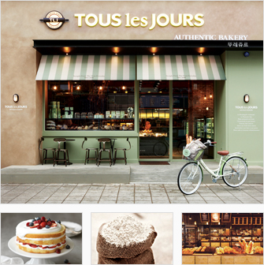

재료부터 다른 건강한 베이커리
재료부터 다른 건강한 베이커리 My No.1 스테이크하우스
My No.1 스테이크하우스-
재료부터 다른 건강한 베이커리
뚜레쥬르는 빵마다 고유의 맛을 살려주는 맞춤 밀가루, 빵에 1% 들어 가는 소금까지도 신안 천일염을 사용하는 재료부터 다른 건강한 베이커리입니다.
뚜레쥬르 홈페이지 바로가기
프랑스어로 ’매일매일(Everyday)’이라는 뜻을 가진 뚜레쥬르는 매장에서 직접 구운 신선한 빵을 제공하는 국내 최초의 오븐 베이커리로, 꾸미지 않은 재료 그대로의 풍미를 담아 맛있고, 좋은 재료로 건강하며, 어머니의 정성을 담아 신선하고 정직한 빵과 케이크를 만듭니다.
-
My No.1 스테이크하우스
해외에 로열티를 지불하지 않는 국내 토종 브랜드 빕스는 고급 스테이크 하우스에서 맛볼 수 있던 정통 프리미엄 스테이크와 계절별로 다양하고 신선하게 준비된 샐러드 바를 제공하여 다양한 연령대에서 사랑 받고 있는 브랜드입니다. 빕스(VIPS)는 브랜드 이름(Very Important Person’s Society)처럼 ‘고객 한 분 한 분을 귀한 손님으로 소중하게 모시겠다’ 는 마음가짐으로 최상의 서비스와 최고의 맛을 제공하기 위해 노력하고 있습니다
빕스홈페이지 바로가기
-
Healthy & Fresh Korean Kitchen
건강하고 신선한 한식을 재해석하다. 비비고는 정갈한 정통한식의 현대적인 해석을 통해, 건강하고 신선한 한 끼 식사를 선사하는 글로벌 대표 한식 브랜드 입니다. 비비고라는 이름은, 한식의 철학 ‘비빔’과 편리함을 상징하는 ‘투 고(to-go)’의 합성어로 영양소가 고루 담긴 정갈하고 편리한 식사로 현대인의 바쁜 하루에 활기를 더하는 상차림을 뜻합니다. 현재 비비고는 한국·미국·영국·중국·싱가포르 등 전세계 7개국 21개점에서 한국의 맛과 멋을 널리 알리고 있습니다.
비비고 바로가기